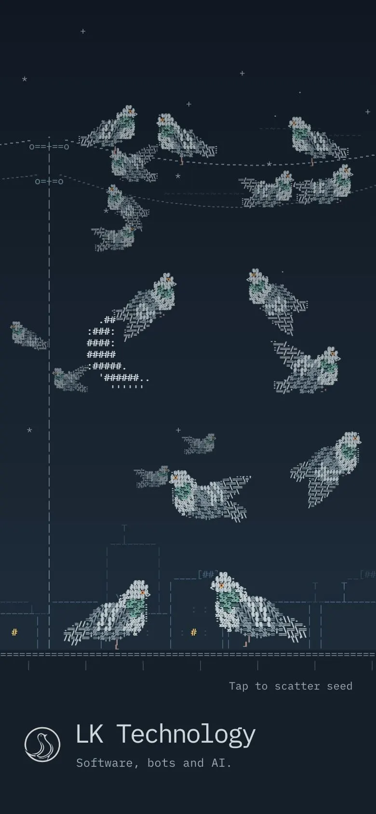
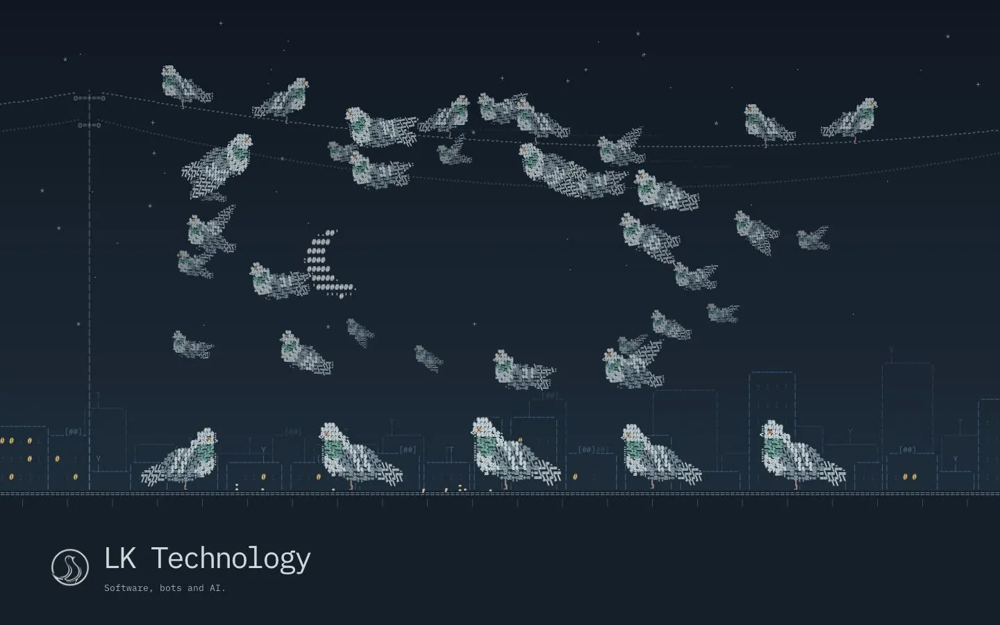
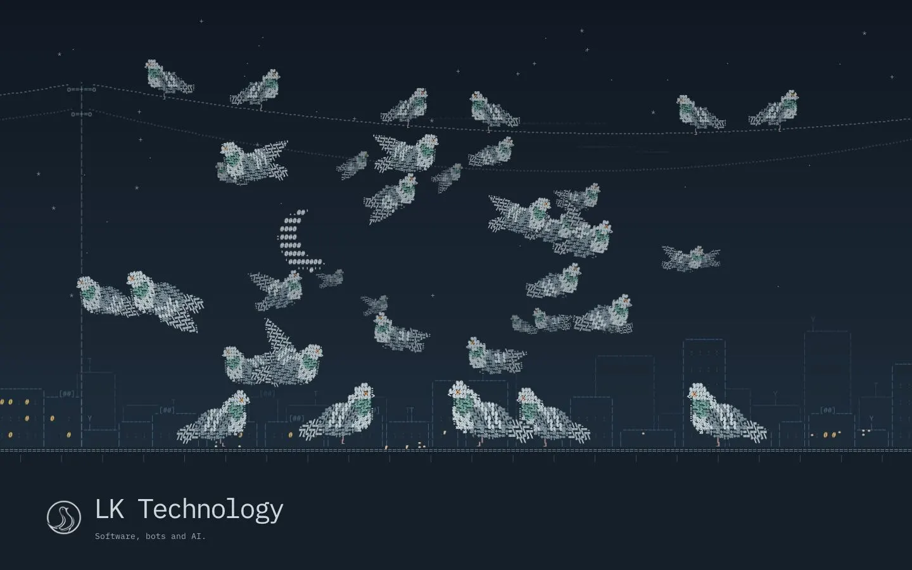
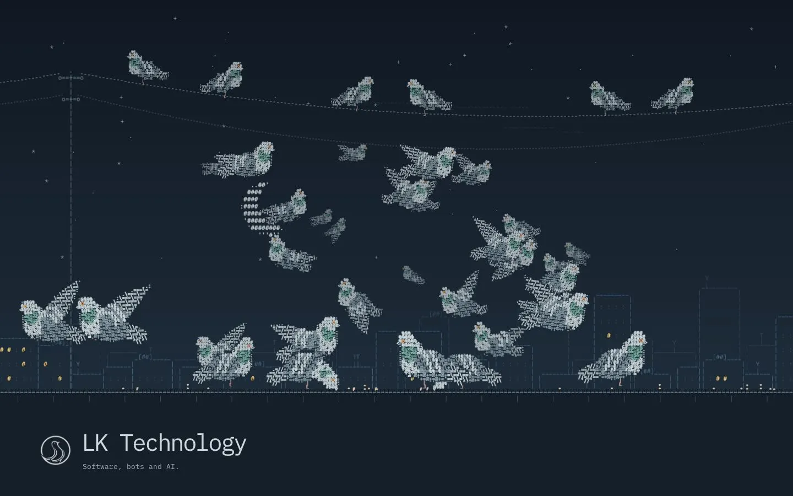

LK Technology
A night scene drawn in text characters, with pigeons to feed.
The landing page of LK Technology, a small studio for software, bots and AI.
Visit lktechnology.in

Design decisions
- The whole page is one night scene drawn in text characters: a crescent moon built from '#', dashed power lines on a pole, a skyline outlined in box characters with yellow '#' for lit windows, and a large flock of pigeons.
- The pigeons are dense ASCII textures with two touches of colour, a green sheen at the neck and an orange eye, so they read as birds from a distance and as type up close.
- Copy is cut to the name, 'Software, bots and AI.' and one hint, so the interaction does the selling.
- Type: IBM Plex Mono throughout, light grey (#CDD8DB) on deep navy (#151F29). The name is set large and light at the bottom left beside a line-drawn bird logo.
- Interaction: clicking anywhere scatters seed. Specks land along the ground line, the hint disappears and the flock comes down to feed, so the page works as a small toy before it reads as a company site.
- Mobile: the scene is recomposed for a tall screen with fewer, larger birds, and the hint changes from 'Click' to 'Tap to scatter seed' and moves above the name.
On a phone
LK Technology has a single theme, so there is one set of captures.
The flow, step by step




Further down the page